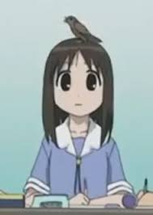

Los pájaros caminan por decisión propia
Hoy vi un pájaro caminando.
Podía volar. Lo sé. Tiene alas.
Pero decidió caminar.
Eso significa que:
Volar cansa.
Caminar es más interesante.
O está infiltrado entre nosotros.
Si yo pudiera volar, creo que también caminaría.
Para no presumir.
Quizá el pájaro es humilde.
Voy a observar más pájaros.
